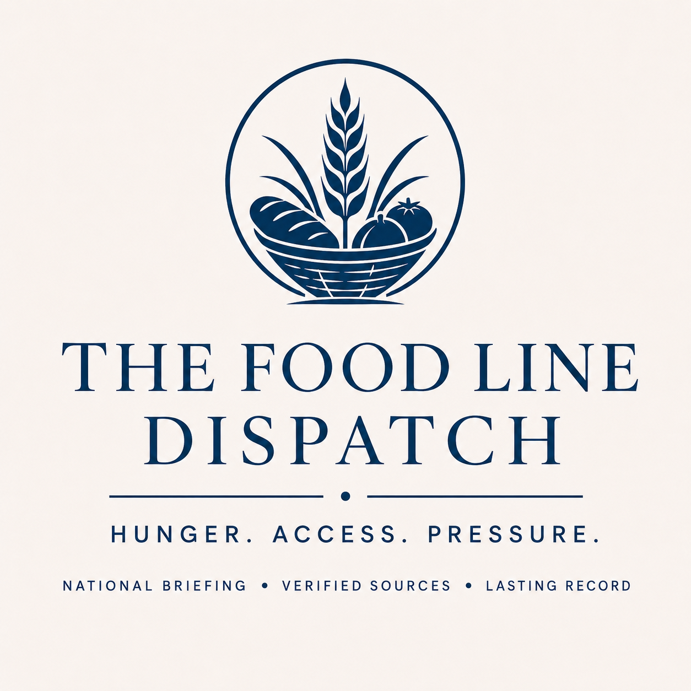

The Blue Fern Co.
Food Line Source Table 2026-06-22
Sources behind this briefing: 0 sources were used on the public page. The run reviewed 39 records and excluded 38 that were duplicate, stale, unrelated, or not strong enough for public use. 39 stale current-story candidate sources were excluded by the freshness window.
Exclusion breakdown: stale 39.
| Record ID | Title | Publisher | Location | Source link | Source family | How it was used | Issue | What happened | What the source says | Verification status | Who may be affected | Used on public page | source_freshness_status | source_freshness_date_basis | source_public_story_eligible |
|---|---|---|---|---|---|---|---|---|---|---|---|---|---|---|---|
| food-line-auto-5ff24a524be74e0a | Home | Food Lifeline | Food Lifeline | Seattle, WA | https://foodlifeline.org/ | Food bank/provider | Stale excluded | Background reference | Background reference | In Seattle, WA, Food Lifeline reported context only | Stale excluded | No | stale_outside_daily_window | page_metadata | false |